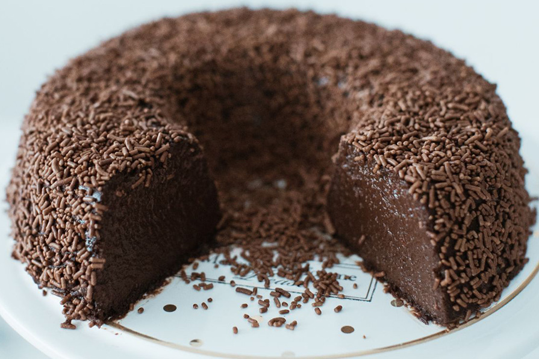
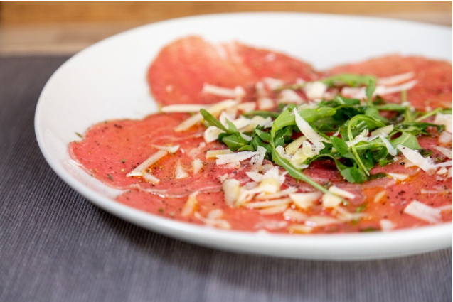
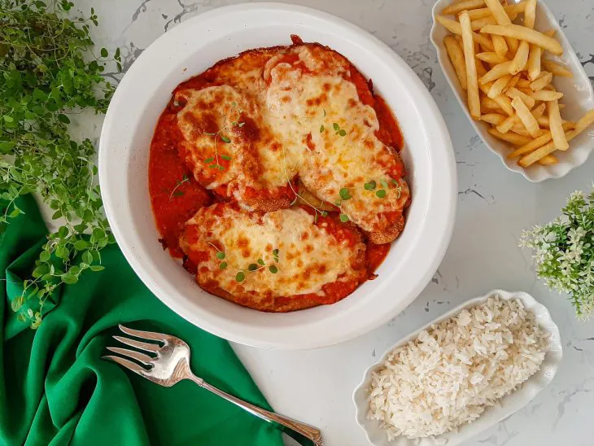
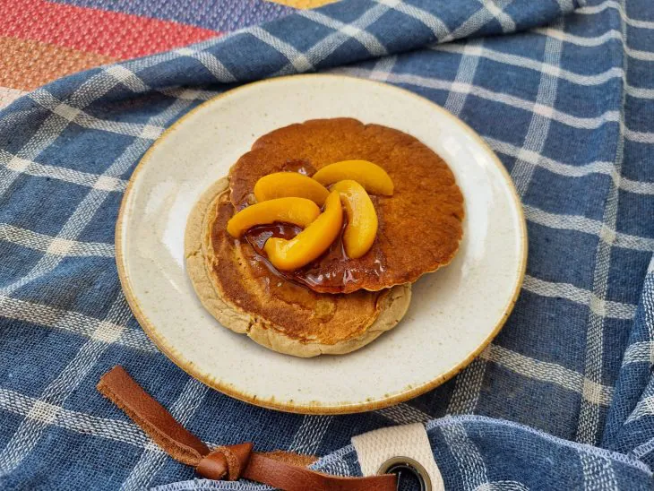

2 medidas (da lata) de Leite Líquido NINHO® Forti+ Integral (790 ml)
3 ovos
Modo de preparo:
Calda
Em uma panela de fundo largo, derreta o açúcar até ficar dourado.
Junte a água quente e mexa com uma colher.
Deixe ferver até dissolver os torrões de açúcar e a calda engrossar.
Forre com a calda uma forma com furo central (19 cm de diâmetro) e reserve.
Pudim
Em um liquidificador, bata todos os ingredientes do pudim e despeje na forma reservada.
Cubra com papel-alumínio e leve ao forno médio (180°C), em banho-maria, por cerca de 1 hora e 30 minutos.
Depois de frio, leve para gelar por cerca de 6 horas.
Desenforme e sirva a seguir.
Sobremesas
Brigadeirão

Ingredientes:
1 Leite MOÇA® (lata ou caixinha)
1 lata de NESTLÉ Creme de Leite
1 xícara (chá) de Chocolate em Pó NESTLÉ DOIS FRADES
4 colheres (sopa) de açúcar
1 colher (sopa) de manteiga
3 ovos
1 xícara (chá) de chocolate granulado para decorar
Modo de preparo:
Em um liquidificador, bata o Leite MOÇA com o Creme de Leite NESTLÉ, o Chocolate em Pó DOIS FRADES, o açúcar, a manteiga e os ovos até que a mistura fique homogênea.
Despeje em uma forma com furo central (19 cm de diâmetro) untada com manteiga.
Cubra com papel-alumínio e asse em forno médio (180ºC), preaquecido, em banho-maria, até ficar firme (cerca de 1 hora e meia).
Desenforme ainda morno e decore toda a superfície com o granulado.
Leve à geladeira por cerca de 6 horas e sirva.
Entradas
Coquetel de Camarão
Ingredientes:
1 e 1/2 xícara de chá de água
2 colheres de chá de sal
12 camarões grandes limpos
400 ml de iogurte sem lactose
1 colher de sobremesa de molho inglês
1 colher de sobremesa de mostarda D’jon
1/2 colher de sobremesa de catchup
2 colheres de sopa de conhaque
2 rodelas de abacaxi
Páprica picante a gosto
Modo de preparo:
Em uma panela, coloque a água com o sal e deixe ferver.
Em seguida, adicione os camarões e deixe cozinhar por dez minutos.
Retire os camarões e escorra bem. Reserve.
Em uma tigela, misture o iogurte com o molho inglês, a mostarda, o catchup, o conhaque, os abacaxis picados em cubos e uma pitada de sal.
Coloque essa mistura em tacinhas de sobremesa e decore com os camarões ao redor.
Para finalizar, polvilhe páprica picante por cima.
Entradas
Coquetel de Camarão

Ingredientes:
200g de carne do corte bovino lagarto fatiada fininha
1 maço de agrião
200g de queijo parmesão
50g de alcaparras
6 colheres (sopa) de mostarda amarela
2 colheres (sobremesa) de alho picado ou triturado
2 pitadas de pimenta-do-reino
Sal a gosto
2 colheres (sobremesa) de orégano
1 colher (sobremesa) de molho inglês
1 colher (sobremesa) de vinagre branco
4 colheres (sopa) de azeite virgem
Modo de preparo:
Forre um prato com o agrião.
Cubra todo o agrião com as finas camadas de carne.
Corte o queijo parmesão em tiras e reserve.
Para o molho, misturar todos os outros ingredientes até formar um creme homogêneo.
Regar a carne com o molho pronto.
Acrescentar o queijo cortado em tiras por cima.
Finalizar com as alcaparras.
Regar o prato com azeite virgem.
Pratos Principais
Strogonoff de Carne
Ingredientes:
colher de sopa de azeite
1 colher de sopa de manteiga
1/2 cebola picada
500 gramas de carne picada
1 colher de chá de sal
Pimenta-do-reino a gosto
1 colher de sopa de molho inglês
1 colher de sopa de mostarda
1 colher de sopa de ketchup
2 tomates sem pele e sem sementes picados
1/2 xícara de chá de champignon
1 lata de creme de leite sem soro (300 gramas)
Modo de preparo:
Reúna todos os ingredientes.
Leve uma panela ao fogo baixo, coloque o azeite, a manteiga, e refogue a cebola.
Assim que a cebola murchar, adicione a carne, tempere com sal e pimenta, e espere ela dourar.
Acrescente o molho inglês, a mostarda, o ketchup, o tomate, e misture.
Junte os cogumelos, o creme de leite, e se precisar, acerte o sal e desligue o fogo.
Sirva e aproveite!
Pratos Principais
Filé de Frango à Parmegiana

Ingredientes:
1 kg de filé de frango
1/2 colher de sopa de sal
1 pitada de pimenta-do-reino
1 pitada de páprica picante
1 pitada de açafrão
1 limão espremido
2 ovos (levemente batidos com sal e pimenta)
Farinha de trigo para empanar
Farinha de rosca para empanar
340 gramas de molho de tomate
300 gramas de queijo mussarela
Modo de preparo:
Reúna todos os ingredientes.
Tempere os filés (sal, pimenta-do-reino, páprica picante, açafrão e limão). Passe eles no ovo, em seguida, na farinha de trigo, novamente no ovo, e, por fim, na farinha de rosca
Pressione levemente para que a farinha fique grudada na carne e repita o processo com todos os filés
Frite-os em óleo bem quente até que fiquem dourados.
Em uma travessa que possa ir ao forno, distribua os filés, de modo a formar uma camada. Não coloque um filé por cima do outro. Distribua o molho de tomate, o queijo ralado por cima do frango e leve-os para assarem em forno preaquecido a 230 ºC por 20 minutos, ou até que o queijo fique gratinado.
Tire do forno com cuidado e está pronto! Aproveite.
Comidas Fitness
Panqueca de Aveia

Ingredientes:
1 xícara de aveia em flocos finos ou farinha de aveia
1 xícara de água
2 colheres de sopa de melado
1 colher de sopa de farinha de linhaça
1 colher de chá de fermento químico em pó
Modo de preparo:
Reúna todos os ingredientes.
Coloque todos os ingredientes no liquidificador, com exceção do fermento, e bata até ficar homogêneo. Se você estiver usando farinha de aveia, pode misturar todos os ingredientes com um fouet.
Acrescente o fermento por último e misture delicadamente.
Aqueça uma frigideira antiaderente em fogo baixo. Espalhe um pouco da massa e tampe para abafar e já começar a assar o outro lado.
Verifique se está bem assada e vire para assar o outro lado até dourar. Tampe novamente para abafar.
Repita o processo até terminar a massa.
Sirva com o acompanhamento de sua preferência (mel, frutas, geleias, castanhas). Bom apetite!
Comidas Fitness
Crepioca de Queijo com Tomate e Orégano
Ingredientes:
1 ovo
2 colheres de sopa de tapioca
1 pitada de sal rosa
1 fio de azeite de oliva
1 fatia de queijo mussarela
1 colher de sopa de tomate picadinho
Orégano a gosto
Modo de preparo:
Reúna todos os ingredientes.
Em um recipiente, misture o ovo, a tapioca e o sal.
Em uma frigideira, aqueça o azeite, despeje a mistura de ovo e tapioca e deixe cozinhar até começar soltando do fundo da frigideira, vire e doure o outro lado.
Adicione o queijo, o tomate e o orégano, tampe a frigideira e cozinhe por 1 a 2 minutos.
Depois do tempo necessário, dobre a crepioca ao meio e acomode em um prato. Sirva essa delícia e bom apetite!.